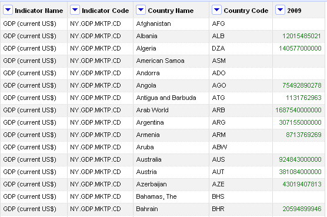
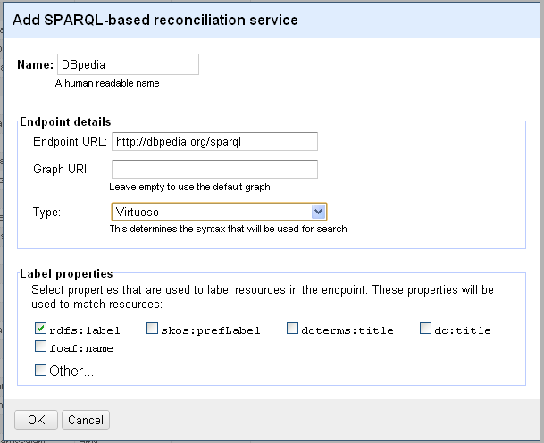
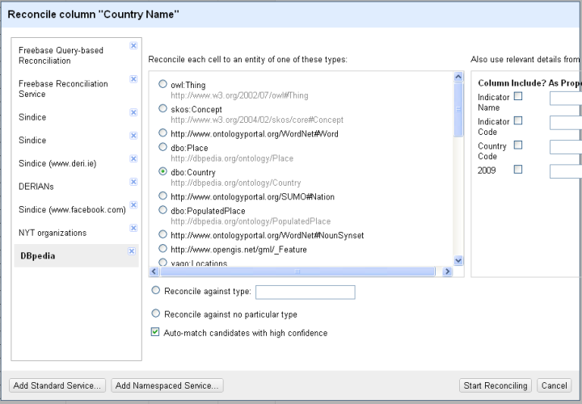
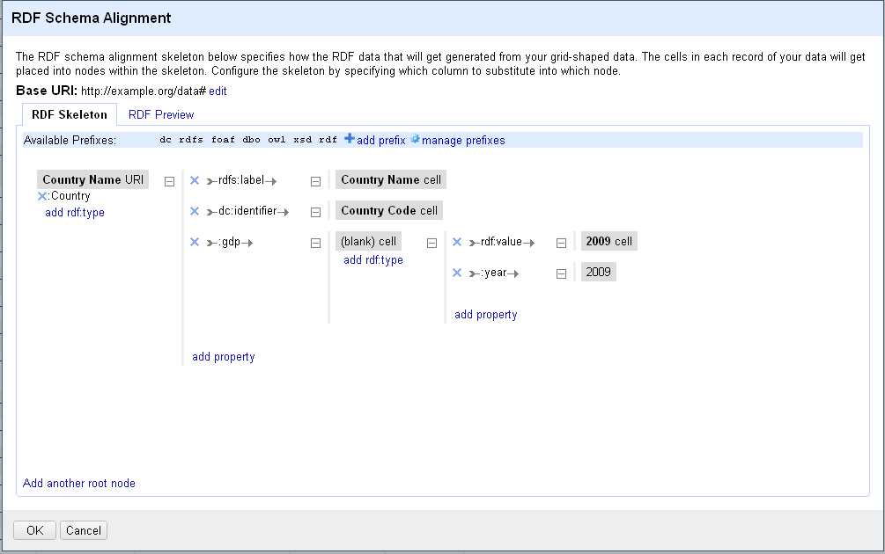
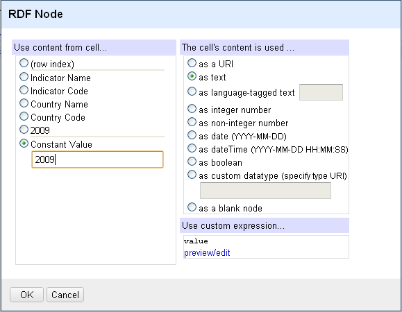
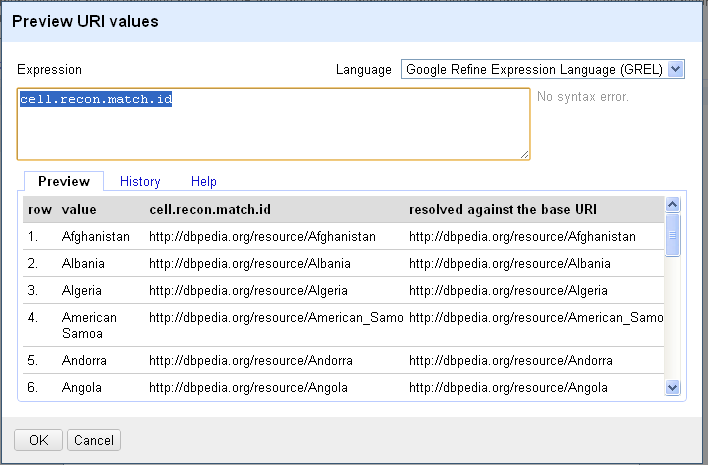

The example will use
a list of GDP prer country values as of 2009 according to
the World Databank. This data can be exported the data as CSV from the World Databank using
this wizard.
The figure below shows a snippet of the data

The intended RDF we want to export should look like (for one of the lines):
@prefix my: <http://example.org/data#> .
<http://dbpedia.org/resource/Bahrain>
a my:Country ;
rdfs:label "Bahrain"@en ;
dc:identifier "BHR";
my:gdp [
rdf:value "20594899946"^^xsd:int;
my:year "2009".
].
Notice that we want to use DBpedia URIs for countries instead of coining new ones.
After creating a project in Google Refine, we will define a new reconciliation service against DBpedia. From the "RDF" menu select Add reconciliation service then Based on SPARQL endpoint. Fill in the details as shown below.

Choose start reconciling... from the column drop down menu of the "Country Name" column. Select the "DBpedia" service that we have just added. As shown below, type guessing will suggest a list of types. Select dbo:Country as it best fits our data.

Go ahead with the start reconciling button. After a while, Google Refine presents reconciliation results with factes about reconciliation decision and top candidate score. You might need to spend some time resolving ambiguity when multiple sugggestions are provided.
Pingo! data are reconciled, let's now go to the RDF export stuff!
Use
Edit RDF Skeleton... command available under the "RDF" menu to design the following skeleton:

We set the base URI at the top of the dialog to http://example.org/data#
We added "dc" vocabulary using add prefix
We created the skeleton by repeatedly using add rdf:type and add property
We created the new properties gdp and year and the new class Country. These will be defined within the default namespace specified by the base URI
To use the reconciled URI from DBpedia we have to use the following
GREL expression:
cell.recon.match.id when defining the country node (see figure below)
The figure below shows an example of a node dialog (the
Constant 2009 node)

Notice the custom expression used to define the URI. The
preview/edit shows sample values of the first 10 rows as shown below

After saving the skeleton, RDF data can be exported in RDF/XML or Turtle from the
Export menu (You can download the result
RDF data of the example
RDF/XML ,
Turtle )